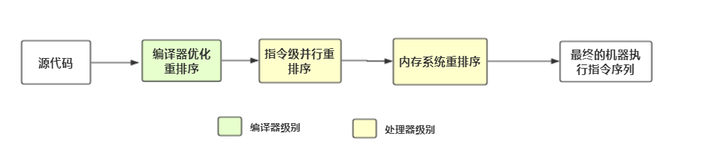

指令重排序分为三种，分别为编译器优化重排序、指令级并行重排序、内存系统重排序。如图所示，后面两种为处理器级别（即为硬件层面）。

// CPU1执行以下操作
a = 1;
int i = b;
// CPU2执行下面操作
b = 1;
int j = a;
其执行图如下：
从上面图中我们可以看到，对于CPU来说，先将a = 1写入缓存在读取变量b，过后在写入a到主内存，而这个操作从表面上看就变成了先读取变量b，在写入a到主内存，也就是发生了重排序，所以才说这为伪重排序。
而从上面我们也可以看出，由于CPU1和2写入的时机不同，最终可能导致读到的(a,b)变量有四种情况，分别是(0,0),(0,1),(1,0),(1,1)。例如，在两个缓存未写入主内存的时候就进行变量读取，这时候读到的就为(0,0)，其他情况类推。所以Java在实现内存模型的时候会禁止特定类型的重排序。
as-if-serial语义：这是重排序都需要遵循的规则，其大致意思就是在单线程中，只要不改变程序的最终执行结果，那么为了提升性能可以改变指令执行的顺序。
在编译器方面使用volatile关键字可以禁止指令重排序，而在硬件方面实现禁止指令重排序的则是内存屏障。其中包括硬件层本来就有的LoadBarriers和StoreBarriers 和JVM封装实现的四种内存屏障。
内存屏障分为两种，LoadBarriers和StoreBarriers。
i = a;
LoadBarriers;
// ..其他操作如上伪代码中，在执行其他操作之前必须保证a的变量从主内存中读取并且刷新到缓存中。
a = 1;
b = 2;
c = 3;
StoreBarriers;
// ..其他操作如上伪代码中，保证在其他操作之前，写入缓存中的a,b,c三个变量同步到主内存中，并且其他线程可以观察到变量的变化。
...
int i = a;
LoadLoad;
int j = b; 在这段代码中，在int j = b以及后面的Load操作中，都能见到int i = a的操作，也就是int i = a先于后面的读取操作。即，禁止int i = a和之后的读操作重排序。
int i = a;
LoadStore
b = 1;
// int i = a对于b = 1及之后的store操作均可见。我们都知道volatile关键字有两个语义：
其中JVM对其禁止指令重排序在硬件层面的实现就是通过在volatile修饰的变量前后插入内存屏障。volatile变量的内存屏障规则如下：
在每个volatile写操作前插入StoreStore屏障，在写操作后插入StoreLoad屏障；
在每个volatile读操作前插入LoadLoad屏障，在读操作后插入LoadStore屏障；
而在编译器方面则是因为对于volatile变量内存中的六种操作会有特殊的规则，可以看看我的另一篇文章——浅谈内存模型，里面介绍了volatile两种语义的原理，同时也说明了volatile关键字没有原子性的原因。
文章若有不正之处，还望指出，在此多谢！